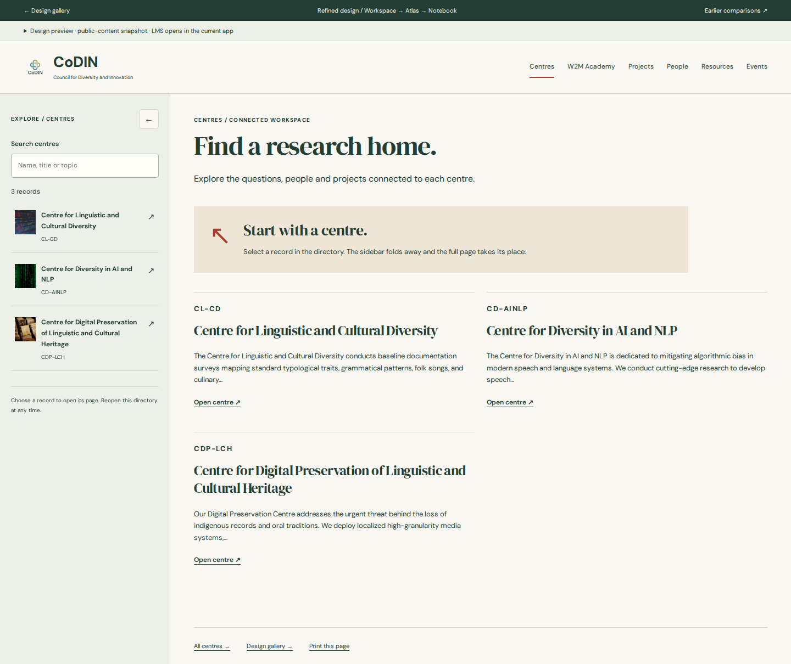
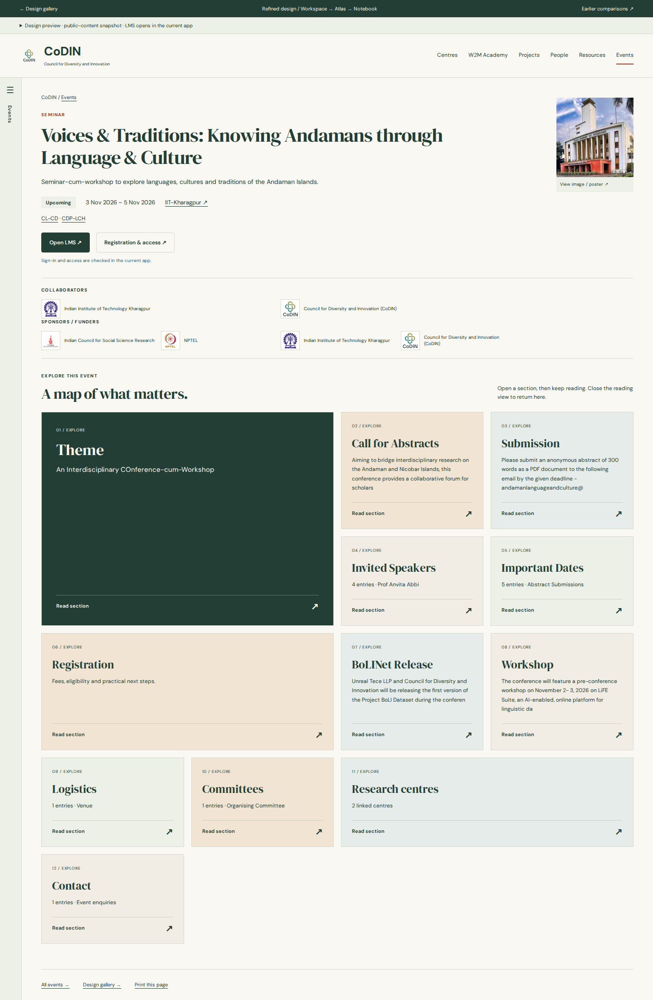
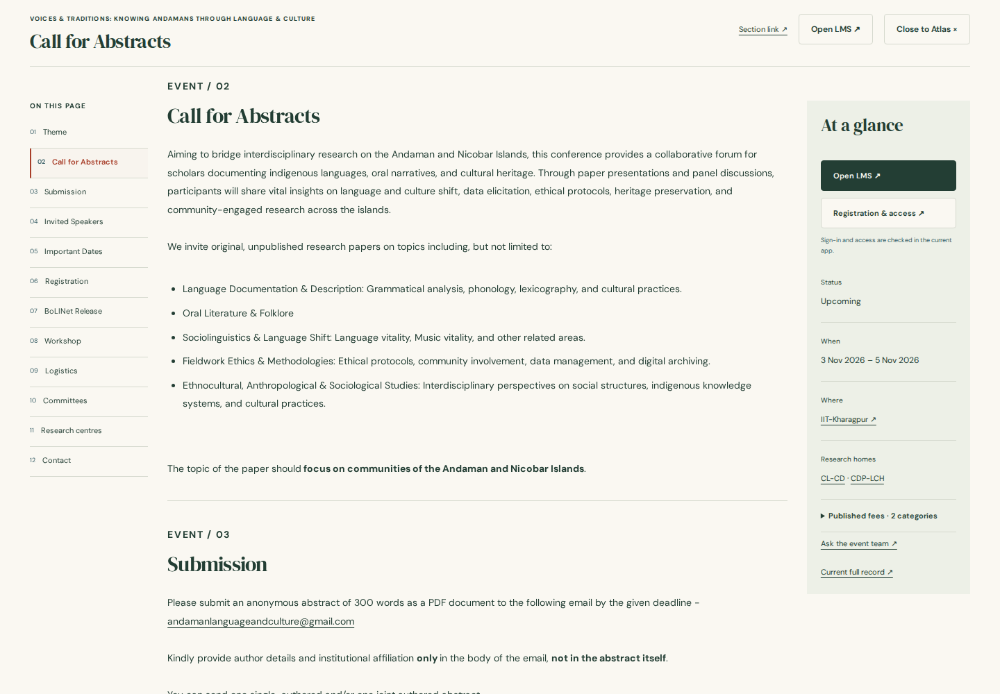

Workspace → Atlas → Notebook
Index pages use a full-height Connected Workspace directory. Selecting a record collapses the directory into a reopenable rail. Centre, event, W2M course and project pages begin with Section Atlas; a card opens a continuous Notebook with a section index and an At a glance card. People and resources open directly as Notebooks.
The reader progressively mounts sections as they approach the viewport and updates the active contents item. Open LMS uses the existing app route and its sign-in, admission, payment and material-access logic; the prototype does not simulate entitlement.
Printable review PDF ↓ · Browser verification · Earlier comparison gallery
| Page | View | Desktop | Tablet | Phone |
|---|---|---|---|---|
| centres | index | 1440px | 768px | 390px |
| centres | detail | 1440px | 768px | 390px |
| centres | reader | 1440px | 768px | 390px |
| academy | index | 1440px | 768px | 390px |
| academy | detail | 1440px | 768px | 390px |
| academy | reader | 1440px | 768px | 390px |
| projects | index | 1440px | 768px | 390px |
| projects | detail | 1440px | 768px | 390px |
| projects | reader | 1440px | 768px | 390px |
| people | index | 1440px | 768px | 390px |
| people | detail | 1440px | 768px | 390px |
| resources | index | 1440px | 768px | 390px |
| resources | detail | 1440px | 768px | 390px |
| events | index | 1440px | 768px | 390px |
| events | detail | 1440px | 768px | 390px |
| events | reader | 1440px | 768px | 390px |


Representative compositions


